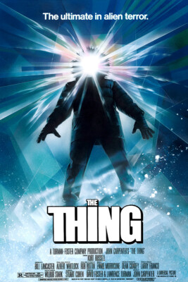
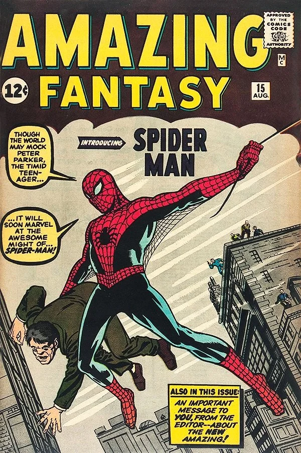
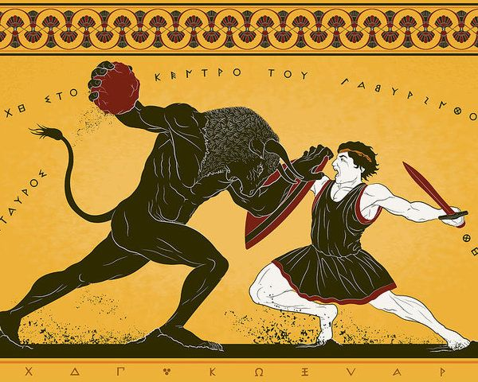
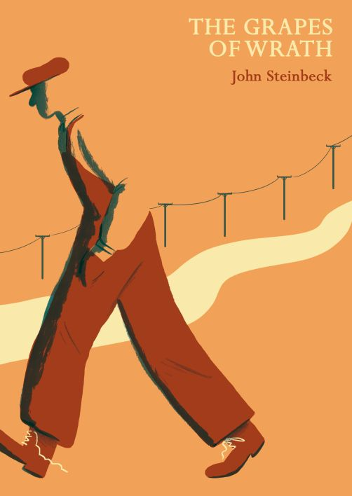

MusicianI have been playing and recording all kinds of music (jazz, classical, metal, and folk) for 9 years.Game loverI love playing games from time to time. There are a lot of hidden gems out there.

MoviesI would consider myself a cinephile, I have logged over 400 films on Letterboxd.

ComicsI have been reading comics since I was a child. It is one hobby I will never let go of.

MythologyI have been fascinated by ancient mythology and iconography, and my interest has only grown stronger over the years.

BooksI love books and try to read as much as I can. Reading has been a habit of mine since childhood, and it continues to shape the way I think.